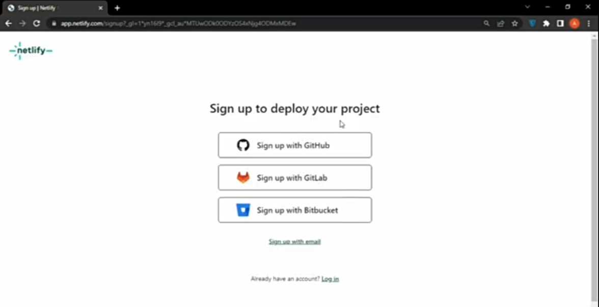

How To Host Websites For Free

Want to launch your websites but don't have money for paid hosting? You're not alone! As a beginner developer, getting your projects online is essential, but hosting costs can be a barrier. The good news? You can host your websites for free!
In this guide, i'll walk you through what web hosting is, why it matters, and the best platforms to host a website without spending a dime. By the end, you will know exactly how to deploy your projects using free hosting websites.
What is web hosting?
Web hosting provides a secure place to store online content.
Why should you host or deploy your websites as a developer?
As a developer, we often want to showcase our projects, so, if you would like people to be able to find or access and use your websites, you will need to host your websites.
Importance of web hosting
Web hosting or deployment, is very crucial for us as developers, because it allows us to make our projects accessible online as stated earlier, ensuring reliable performance, security, and scalability, ultimately enabling our projects to reach global audience.
Many beginners struggle with hosting costs, but free solutions exist.
Hosting Platforms i know
There are various hosting platforms out there, here are the ones i know of:
- GitHub
- Netlify
- Versel
- Fire base
.GitHub
What is GitHub?
GitHub is a proprietary developer platform that allows developers to create, store, manage, and share their code
Advantages of GitHub
1. Collaborations
You can collaborate, which means you and other developers can work together on the same project.
2. Showcasing your work
Are you a developer, and wish to attract recruiters? GitHub is the best tool for this! Clients intend to look at GitHub profiles to hire developers. On your GitHub profile, you can showcase your work to get clients.
3. Documentation
By using GitHub, it is easier to get exellent Documentations. Their help/guide sections has articles for nearly any topic related to Git that you can think of.
Disadvantages of GitHub
1. Difficulties with large repositories
While using GitHub, you may encounter performance issues when handling large repositories or projects with extensive histories.
2. Reliance on network connectivity
GitHub's web-based interface and most of it's features rely on an internet connection.
3. Learning curve
GitHub and Git in general, can be challenging for beginners due to the concepts of version control, branching, merging, and pull requests.
.Netlify
Definition of Netlify
Netlify is a platform that simplifies mordern web development by offering tools for building, deploying, and managing websites and web applications.
Advantages of Netlify
1. Beginner friendly
Netlify is easy to use. Even if you are not really into tech, you can still easiy use it. Very straight forward.
2. Fast
Hosting websites on netlify is very fast. It takes a few seconds to deploy.
3. Deploy previews
Netlify provides deploy previews, allowing you to see how your changes will look before they are publicly available.
Disadvantages of Netlify
1. Overages
If you exceed your bandwidth or deployment minuetes, you will be charged extra.
2. Account suspension
For all metered features, if you reach 100% of the limit, new builds will be disabled and all sites on your account will be suspended. You will need to get a paid plan to restore the account and your sites.
3. Limitd free tier
While netlify offers a free plan, it has limitations on bandwidth, build minuetes, and other features.
.Vercel
What is Vercel?
Vercel is a cloud platform that simplifies the deployment and hosting of web applications, especially frontend and serverless applications.
Advantages of Vercel
1. Fast and easy deployment
Vercel's deployment process is designed to be fast, intuitive, and hassle-free.
2. Edge network for performance
Vercel uses a global edge network to serve content closer to users, reducing latency and improving load times.
3. Serverless function
Vercel also allows developers to run backend code without managing servers.
Disadvantages of Vercel
1. Limited backend capabilities
Vercel is primarily optimized for frontend development and serverless functions. For complex backend needs (e.g., databases, long-running processes.) you may need to rely on additional services, which can complicate the architecture.
2. Cost of scaling
While Versel offers a free tier, costs can escalate quickly for high-traffic sites or resource-intensive applications. Serverless functions edgen network usage, and bandwidth can become expensive as your project grows.
3. Vendor Lock-in
Vercel's tight integration with it's own echosystem (e.g., Next.Js) and proprietary features can make it harder to migrate to other platforms if needed. This can limit flexibility for some projects.
.Fire Base
What is Fire base?
Fire base is a cloud-based platform from google that simplifies mobile and web app development by providing a suit of services for backend functionality, allowing developers to to focus on building user experiences rather than infrastructure.
Advantagesof Fire base
1. Free plan
Fire base has a free plan called Spark. You can simply use an an existing google account to log into the Fire base platform and start building apps. This free plan makes Fire base more popular among developers globally.
2. Faster app development
Developing apps on Fire base is faster, so you can start marketing your apps quickly. After launching your apps, Fire base also offers tools that that allow you to engage with users, so they can continue using your app.
3. Google supports Fire base
One of the top advantages of fire base is that it's supported by google, one of the leading technology gaints in the world today.
After google acquired Fire base, the platform passed through serveral improvements that offers additional features and enhanced it's security and stability.
Disadvantages of fire base
1. A Closed Source Platform
Firebase's closed architecture restricts developers from controlling the platform.
This means you cannot change firebase's code, even if what firebase provides does not suit your developments needs.
2. Complex billing Estimation
Fire base is a powerful platform for web/app development, but all the amazing featuresmay be expensive.
The free plan offers only the basic features which lacks the advanced functions that simpify development tasks.
3. Not Available Globally
Since Firebase is an official Google product with it's URL taking a google subdomain, i.e, firebase.google.com, the service is blocked in china and countries that has blocked google services.
Hosting Platforms I Have Used
I have tried out two out of these four hosting platforms, which are:
- GitHub &
- Netlify
And i recommend Netlify for beginners only!!
The reason is because Netlify is very very easy to use for beginners, very straight forward, you can use your email to sign in and you can also link your GitHub account. Plus i'm also a beginner, and i'm still figuring out what works for me, or let me say, what i can use without stress.
When i was to deploy a website for the first time, i used GitHub, and GitHub gave me alot of issues. I had to replace the name of my html file to "index.html". Because if your html file is note named that way, GitHub won't recognise it.
I then went further into my research about free hosting websites and i found Netlify. I Signed in, which i'll be showing you how in a few minuetes, after my registration i uploaded my files, the same files i uploaded on GitHub that was giving me issues, and in less than 30 seconds, my site was uploaded.
So since that day, i have been using Netlify to deploy my projects.
How To Host Websites Or Web Apps Using Netlify
As i stated earlier, Netlify is very easy to use. I'll now teach you how to host websites using netlify.
- Conduct a web-search for Netlify
- Click on the first website link on the appeared list
- Open an account if you don't have one
- Choose an option to create an account
- Follow instructions
- Create a team name
- Select the sites option
- Upload your files
- Wait for till it's live
- You have successfully deployed your prioject.
1. Conduct a web-search
Open Google chrome, then search for Netlify.
2. Click on the first website link on the appeared list
Once you search for Netlify, you will be taken to a page that will bring a list of Netlify links, click on the first link.
3. Open an account if you don't have one After clicking the link, you will be directed to a page where you can create an account.

4. Choose an option to create an account
If you want to open an account, recommend using either your GitHub or email account to sign up. I used my email though. The image above shows the information about this.
5. Follow instructions
For further registration, follow the instructions and pick what fits you the most. Check the image below for further info.
6. Create a team name
Before you can host a website on netlify, you must create a team name. You can use any name of your choice.
7. Select the sites option
If you have gotten to this stage, you are now done with registration. You will now click on the sites option, and you will be taken to where you will be able to upload your files to deploy them.
8. Upload your files
There is a space in the sites page where you can upload your files to deploy them, if you checked the image above you'll see that space there. You can either drag and drop your files or select to pick them. More details in the image below.
9. Wait for till it's live
The amount of time to wait depends on your internet connection, and the size of your files,
10. You have successfully deployed your prioject.
After waiting for a few seconds or minuetes, depending on your network and file size, your website or web app is live!
And that's it! You've just learned how to host your websites using for free using Netlify. With just a few steps, you can take your projects from your local machine to the internet, without paying a dime.
Free hosting platforms like Netlify, makes it easy for developers to showcase their works, test projects, and even launch real-world websites. As you continue growing, you should explore other hosting options, but for now, this is a solid way to get started.
If you found this guide helpful, go ahead and try hosting your projects!